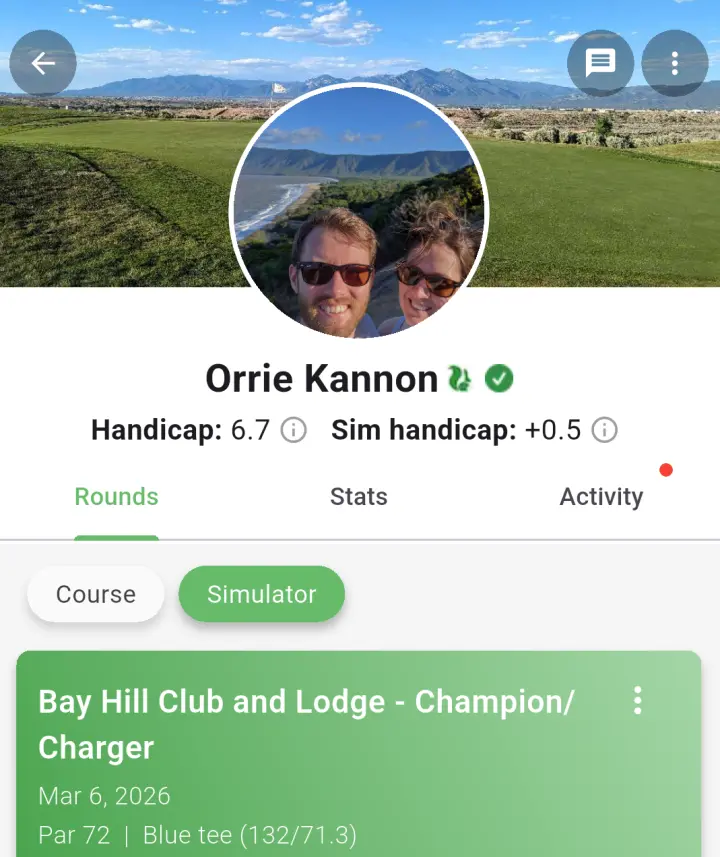
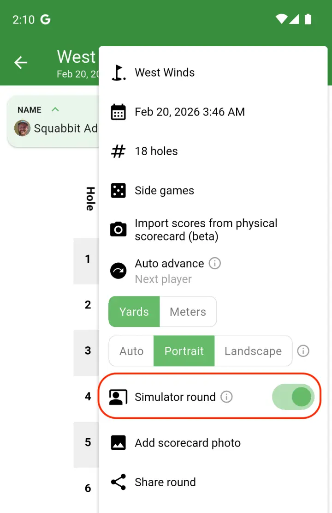
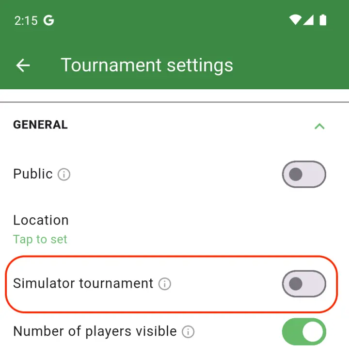

Squabbit now fully supports golf simulator rounds. Whether you're playing on GSPro, TrackMan, or any other simulator setup, you can track your indoor rounds separately from your on-course rounds and maintain a dedicated simulator handicap.
Your simulator rounds feed into their own handicap, calculated using the same WHS formula as your course handicap. This means you get an accurate picture of how you perform indoors without it affecting your course handicap. Both are displayed on your profile.

When entering a round, just flip the "Simulator round" toggle on the scorecard. If you're playing in a simulator tournament or league, you don't even need to do that — it happens automatically.

You can mark any tournament or league as a simulator event. When you do, all handicap calculations and leaderboards will use each player's simulator handicap, and every round played counts toward sim handicaps instead of course handicaps.

For the full breakdown of how simulator rounds work, check out the help article.